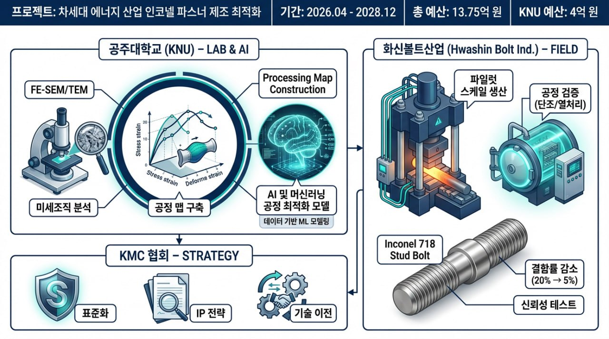
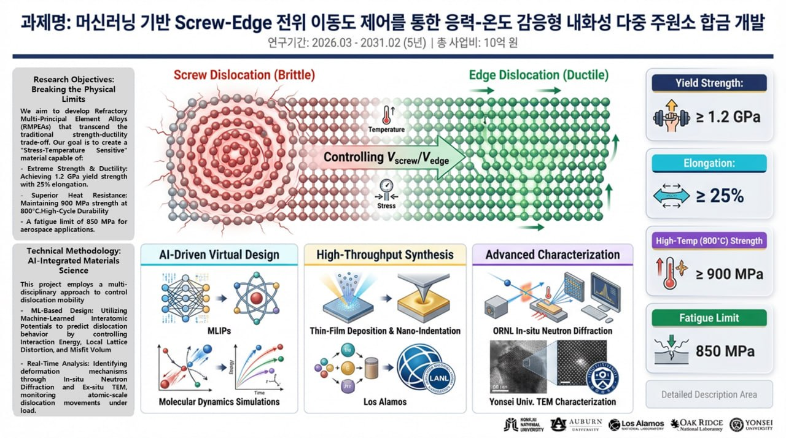
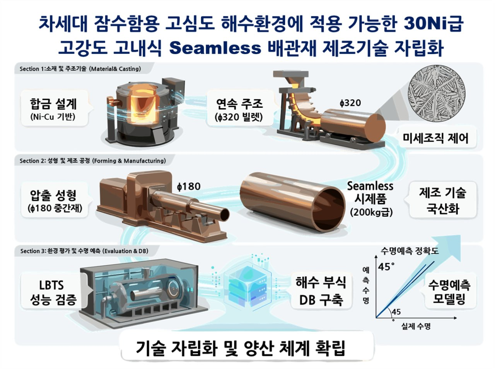
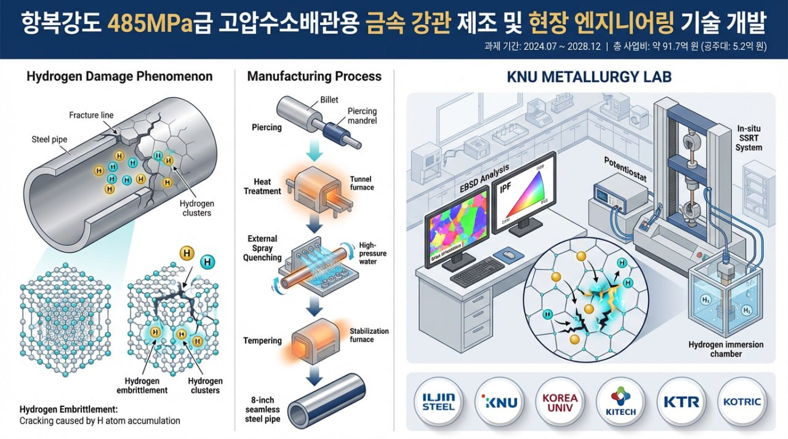
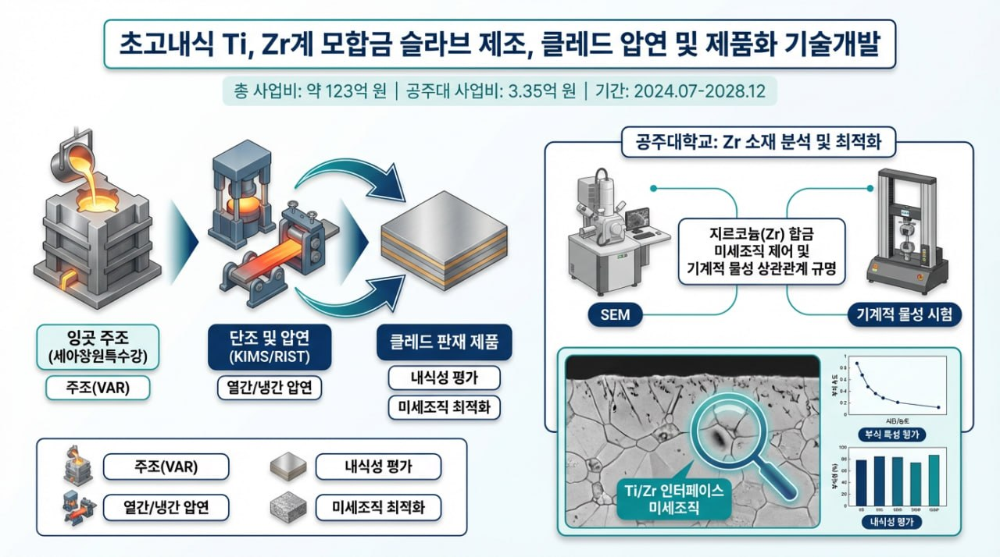
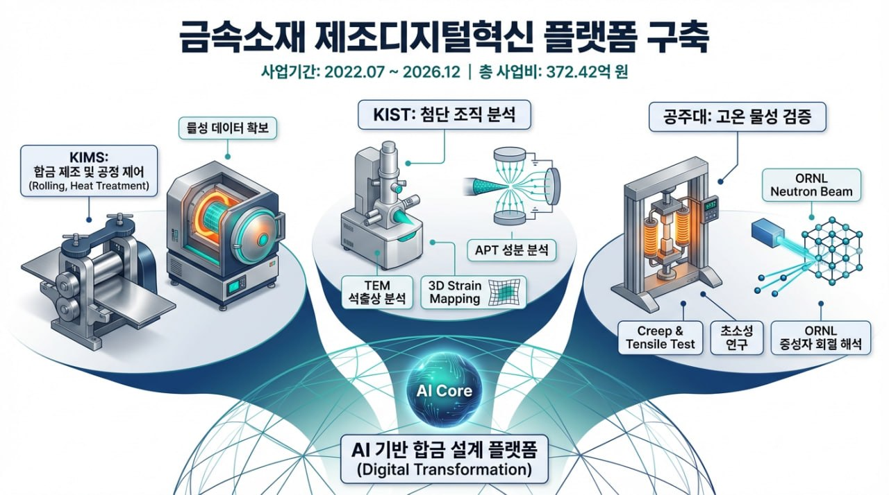
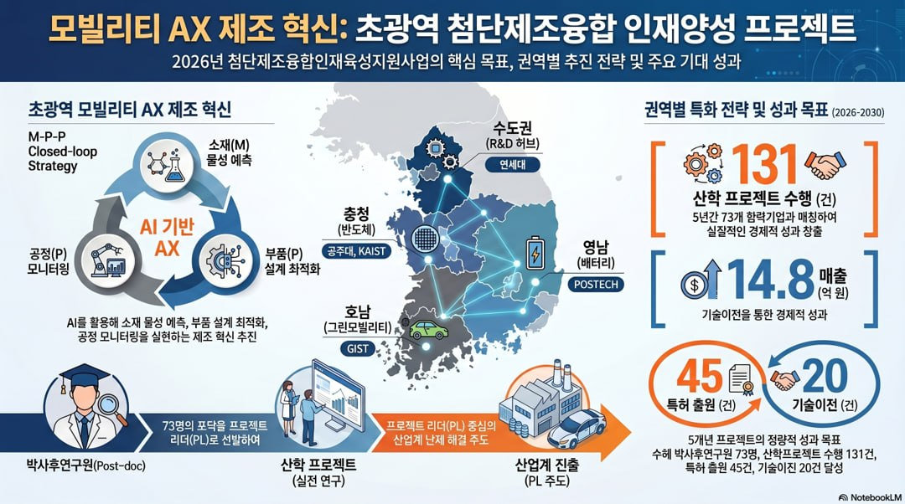

초내열 인코넬 체결류 제조 공정 체계화 Manufacturing process systematization for Inconel fasteners
차세대 에너지 산업용 인코넬 718 체결류의 제조 공정, 열처리 조건, 실증 기반 품질 신뢰성을 연구합니다.
연구과제 (Projects)
인코넬 체결류, 다중 주원소 합금, 해양·수소 환경 소재, Zr 클래딩, 제조디지털혁신, 인재양성 과제를 수행합니다. The laboratory works on structural alloys, hydrogen-compatible steels, Ti/Zr cladding, digital manufacturing, and workforce-training programs.
현재 과제 (Current Projects)
산업 수요와 극한 환경 구조재료 문제를 중심으로 현재 수행 중인 과제를 소개합니다.

차세대 에너지 산업용 인코넬 718 체결류의 제조 공정, 열처리 조건, 실증 기반 품질 신뢰성을 연구합니다.

머신러닝 기반 Screw-Edge 전위 이동도 제어를 통해 고온 환경에서 안정적인 강도와 변형 저항성을 갖는 내화성 다중 주원소 합금을 설계합니다.

고심도 해수환경에 적용 가능한 고내식 합금과 배관재의 제조 공정, 부식-피로 거동, 내구성 및 수명 예측 기반 신뢰성을 연구합니다.

중·장거리 고압수소배관용 고강도 심리스강관의 미세조직과 수소취성 거동을 연구합니다.

Ti/Zr계 모합금 슬라브 제조, 클래드 압연, 계면 조직 제어와 초고내식 제품화 기술의 공정-조직-부식 특성 상관관계를 연구합니다.

금속소재 제조공정, 공정해석, 소재 데이터와 가상공학 기반 예측을 연결해 공정 최적화와 기업 지원형 디지털 제조혁신 플랫폼을 구축합니다.

모빌리티 소재·부품 개발을 위한 첨단제조융합 인재양성 프로그램으로, 제조 AX, 소재 데이터, 공정-물성 이해를 갖춘 연구인력 양성을 목표로 합니다.
4차산업용 첨단소재 분야의 대학원 교육, 연구역량 강화, 논문·연구비·산학협력 성과 축적을 지원하는 인력양성 프로그램입니다.